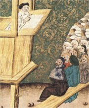
Jan Hus na kazatelně, vyobrazení z Jenského kodexu
|
HUSITSKÉ PÍSEMNICTVÍ
Václav IV. nedokázal čelit silné české šlechtě (byl opakovaně vězněn), ambicím svého bratra (přišel o říšskou korunu) ani krizi v církvi (působení Husa a dalších kritiků). Za jeho vlády postihla Čechy morová rána a došlo k velkému pogromu na židy. Král umírá nedlouho po defenestraci konšelů z Novoměstské radnice (1419), kterou vedl Jan Želivský. Zikmundova snaha získat český trůn se setkala s odporem husitů, kteří odrazili pět křížových výprav proti Čechám. Základním programem husitů byly čtyři pražské artikuly (přijímání pod obojí způsobou, trestání smrtelných hříchů, svoboda kázání, zákaz světského panování duchovenstva), ale hnutí nebylo jednotné. Vedle umírněných pražanů ho tvořili rovnostářští táboři a radikální stoupenci Jana Žižky z Trocnova. V bitvě u Lipan (1434) zvítězil mírnější proud a koncil v Basileji (1436) přistoupil na kompromis a povolil husitské náboženství (basilejská kompaktáta).
|
Historie
Až do kostnického koncilu měla církev dva papeže (1378-1417), kteří se vzájemně exkomunikovali. Po slabé vládě Václava IV. zachvátily Čechy husitské války (1419-1436) a spory o trůn, které ukončilo zvolení šlechtice Jiřího z Poděbrad (1458-1471) českým králem.
|
Jan Hus (1371 až 6.7.1415)
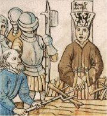
Jan Hus na hranici
Betlémská kaple
Od roku 1391 byla českým kázáním vyhrazena Betlémská kaple, do které se vešlo až 3000 lidí. Působil zde Jan Hus a další žáci Jana Milíče z Kroměříže (†1374). Tento kazatel se vzdal místa v královské kanceláři a žil příkladným životem v chudobě.
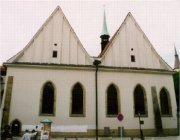
Betlémská kaple byla obnovena v polovině 20. století.
K čemu sloužily odpustky?
Co bylo na odpustcích špatného a co dobrého?
Kdy se přestaly prodávat?
|
Jan Hus
Mistr Jan Hus byl děkanem a od roku 1409 rektorem pražské univerzity. V kritice církve navazoval na učení Viklefovo a dalších kazatelů. Jeho latinské spisy De ecclesia (O církvi) a Questio de indulgenciis (Rozprava o odpustcích) byly určeny pro vzdělance. Česky napsal Výklad Viery, Desatera a Páteře, Knížky o svatokupectví a Postilu, tj. Výklad svatých čtení nedělních. Je také autorem výchovného spisu Dcerka a dopisů z Kostnice.
Husovy názory nezůstaly bez ohlasu. V roce 1412 byl uvržen do klatby a nad Prahou byl vyhlášen interdikt (zákaz církevních úkonů), dokud z ní Jan Hus neodejde. Po odchodu z Prahy působil na Kozím Hrádku a Krakovci a v roce 1414 přijal pozvání na koncil v Kostnici, protože zde chtěl obhájit své učení. Koncil jeho argumenty odmítl, a protože je neodvolal, skončil jako kacíř na hranici.
Do Kostnice přijel také Husův přítel mistr Jeroným Pražský. Přestože své učení odvolal, byl rovněž upálen...
|
John Wycliffe (1320-1384)
Velmi odvážným kritikem církevních zlořádů byl Angličan John Wycliffe, česky Jan Viklef, který učil na univerzitě v Oxfordu, ale byl z ní vyloučen pro údajné kacířství. Žádal sekularizaci církevních statků, neuznával mnohé obřady i svátosti a odmítal církevní hierarchii.
Univerzita
První kritici církve v Čechách působili na pražské univerzitě. Konrád Waldhauser (†1369) přijel na pozvání Karla IV. a kázal latinsky i německy. Také Matěj z Janova (†1394) oslovoval především učence a studenty, protože psal i kázal latinsky. K církvi byli kritičtější Češi. Rozpory uvnitř univerzity vedly Václava IV. k vydání Kutnohorského dekretu (1409), kterým upravil hlasování tak, že český národ získal místo jednoho hlasu tři a ostatní tři národy dostaly společně pouze jeden hlas. Učitelé a žáci na to reagovali odchodem (především do Lipska), což sice vedlo ke snížení úrovně studia, ale univerzita se stala názorově celistvější.
Co píše Hus z Kostnice několik dní před svou smrtí?
Vydržel/a bys mučení? Odvolal/a bys po něm své názory?
Byla Husova smrt zbytečná?
Vítězí pravda?
|
Husitská tvorba
Husité zničili řadu významných památek, ale zároveň vytvořili nové. Husitská literární díla jsou velmi tendenční a snaží se hlavně propagovat nové učení. Jistebnický kancionál obsahuje husitské písně. V Budyšínském rukopisu se nacházejí skladby zaměřené proti Zikmundovi (Žaloba Koruny české, Porok Koruny české) a katolíkům (Hádání Prahy s Kutnou Horou). Velmi se rozšířila znalost Bible a rozkvět zaznamenalo kazatelství.
|
Jistebnický kancionál
Jistebnický kancionál je zpěvník husitských písní. Obsahuje např. skladbu Povstaň, povstaň, Veliké Město pražské nebo bojový chorál Ktož jsú boží bojovníci, za jehož autora je považován táborský kněz Jan Čapek.
|
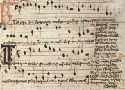
Píseň Ktož jsú boží bojovníci v Jistebnickém kancionálu
V písni se objevuje řada slov, která už nepoužíváme. Zjisti jejich význam.
|
Vavřinec z Březové
(1370-1437)
Vavřinec z Březové se hlásil k pražanům, byl velmi učený, překládal (Mandevillův cestopis, Světová kronika) a psal latinsky. Je autorem Husitské kroniky a Písně přeslavné Koruny české (Píseň o vítězství u Domažlic), která oslavuje bitvu z 14.8.1431.
Co se Vavřincovi z Březové nelíbilo na táborských husitech?
|
Vavřinec z Březové: Husitská kronika
Vavřinec z Březové kritizuje v Husitské kronice (Chronicon) nejen krále Zikmunda a křižáky, ale také táborské husity. Dílo zůstalo nedokončeno – popisuje pouze události z let 1414 až 1421.
|
Jan Žižka z Trocnova
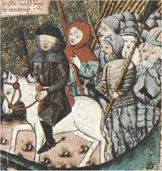
Pokus se zjistit význam slov, kterým nerozumíš.
Co víš o Žižkovi?
|
Katolická tvorba
Katolíci bránili svou víru nejen vojensky, ale také slovem. Očerňovali husitské jeptišky (Viklefice, Bekyně), skládali satirické písně (Nuž, vy ševci viery pravé) a ve skladbě Václav, Havel a Tábor označili husity za příčinu strádání české země.
Co si myslíš o Husovi a husitech?
|
Viklefice
|
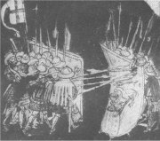
Střetnutí husitů s křižáky
Převyprávěj děj ukázky. Zkus ho zdramatizovat a zahrát?
|
Petr Chelčický (1390-1460)
Na myšlenky Petra Chelčického navázala jednota bratrská nebo ruský realista Lev Nikolajevič Tolstoj.
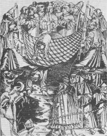
Ilustrace ke spisu Sieť viery
|
Petr Chelčický
Petr Chelčický nezískal univerzitní vzdělání, ale přesto šlo o velmi originálního myslitele, který kritizoval církev i husity. Napsal Postilu (sbírka kázání) a několik náboženských traktátů. V díle O boji duchovním vyjádřil nesouhlas s násilím, které rozpoutali husité. Ve spise O trojiem lidu řeč prosazuje rovnost všech lidí před Bohem a odmítá tradiční dělení středověké společnosti na duchovenstvo, šlechtu a poddané. Sieť viery je založena na biblickém podobenství o Petrově zázračném rybolovu. Síť představuje církev, která zachytává ryby (křesťany), ale dvě mohutné ryby (císař a pepež) tuto síť trhají.
|
Trojí lid
Středověcí myslitelé obvykle dělili křesťany do tří skupin. Nejvýše stálo duchovenstvo (papež, kardinálové, arcibiskupové, biskupové, faráři, opati, abatyše, mniši, jeptišky...), níže šlechta (císař, králové, knížata, páni, zemani...) a úplně dole poddaní (rychtáři, sedláci, bezzemci...). Skutečnost ale byla jiná. Kromě křesťanů žili v Evropě zcela nerovnoprávní židé. Svobodní byli někteří sedláci a měšťané, ti se sdružovali do řemeslnických cechů. Důležité bylo pravidlo mezisňatku (král si nemohl vzít příslušnici nižší šlechty, natož někoho z neurozeného stavu atd.). Jiné dělení bylo podle stavů (vyšší a nižší šlechta, duchovenstvo, měšťané), na které se obracel král, když potřeboval pomoc.
|
Diakritický pravopis
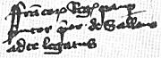
Husův rukopis
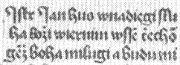
Husův dopis Věrným Čechům z 26. června 1415
|
Diakritický pravopis
V 15. stol. dochází k dalšímu rozvoji češtiny. Vzniká celá řada nových překladů Bible (litoměřicko-třeboňská, olomoucká, boskovická, litoměřická, nymburská…) a velké množství rukopisů.
Čeština měla řadu hlásek [ž, š, č, ř, ď, ť, ň, á, é, í, ó, ú], pro něž chyběla v latinské abecedě zvláštní písmena. Ve 13. stol. se k jejich zápisu začaly používat spřežky (kombinace písmen sz, rc…). Spřežkový pravopis byl nahrazen v 15. stol. pravopisem diakritickým, který používáme dodnes. Touto pravopisnou reformou se zabývá spis De ortographia Bohemica, připisovaný Husovi. Dlouhé samohlásky označovala čárka nad písmenem (nabodeníčko dlúhé) a změkčené souhlásky tečka (nabodeníčko krátké), ze které později vznikl háček.
|
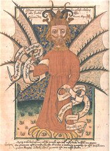
|
Internetové stránky
Betlémská kaple, informace
Betlémská kaple, nákresy
Husité, informace
Žižkův vojenský řád, Kronika velmi pěkná o Janu Žižkovi, Husitské manifesty
Exkurze
Husitské muzeum Tábor
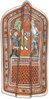
Husitská pavéza (malovaný štít)
|
Doporučená četba
Barvy všechny, Čtvero setkání se starou českou poezií, Československý spisovatel, Praha 1982
Drobná, Zoroslava: Jenský kodex, Husitská obrazová satira z konce středověku, Odeon, Praha 1970
Jirásek, Alois: Mezi proudy, Proti všem, Bratrstvo
Hus a Jeroným v Kostnici, SNKLHU, Praha 1953
Hus, Jan: Knížky o svatokupectví, Praha 1954
Hus, Jan: Listy z Kostnice
Husitské manifesty, ed. A.Molnár, Odeon, Praha 1986
Chelčický, Petr: Ze sítě víry, ed. E.Petrů
Iluminované rukopisy doby husitské, Grafit, Praha 1991
John Viklef, Život a dílo anglického Husova předchůdce, Blahoslav, Praha 1973
Kalivoda, Robert: Husitské myšlení
Macek, Josef: Jan Hus, Praha 1964
Magistri Iohannis Hus: Opera omnia (25 svazků), Academia
Míka, Alois: Petr Chelčický, Praha 1963
Pekař, Josef: Žižka a jeho doba
Šmahel, František: Husitské války
Šmahel, F.: Jeroným Pražský, Praha 1953
Vavřinec z Březové: Husitská kronika, Píseň o vítězství u Domažlic, přel. Heřmanský, Svoboda, Praha 1979
Výbor z české literatury doby husitské (2 svazky)
Ze starých letopisů českých
Ze zpráv a kronik doby husitské
|
Připrav si referát o některé z uvedených knih nebo internetových stránek.
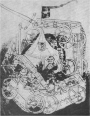
Vozová hradba
|
|